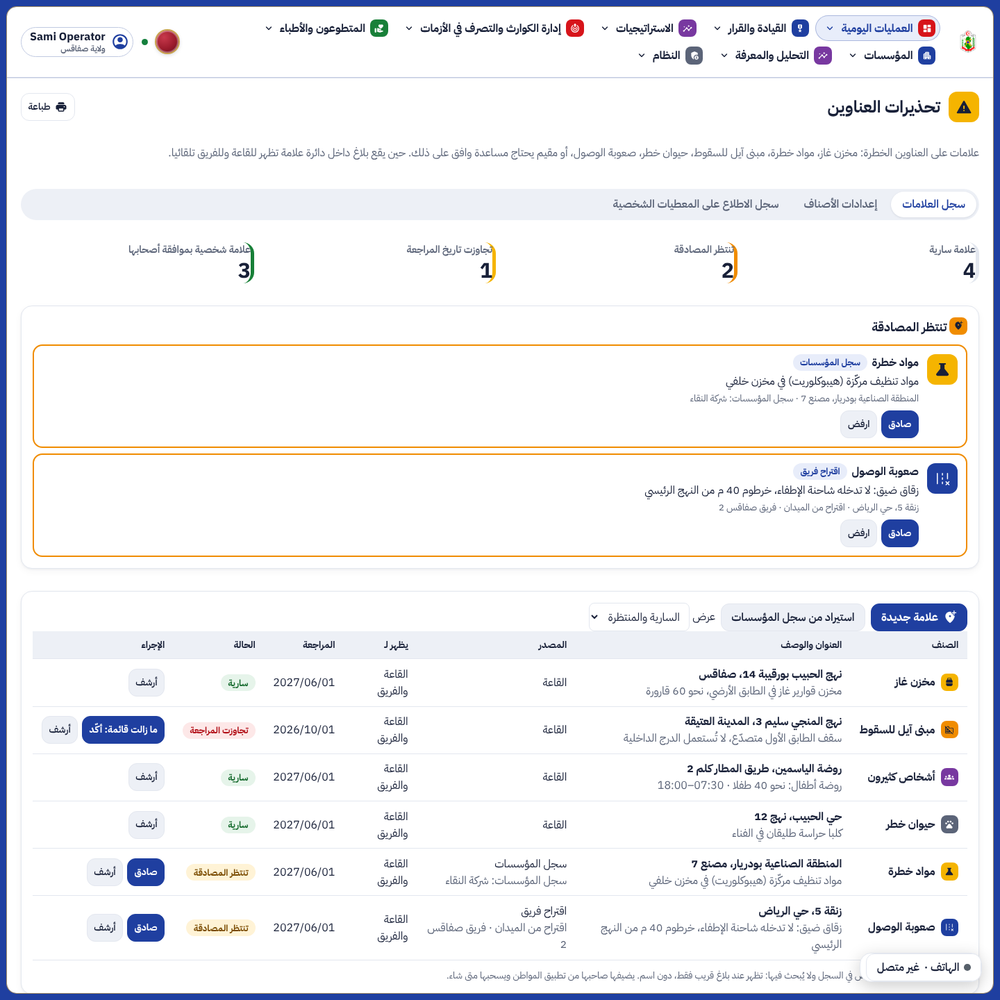
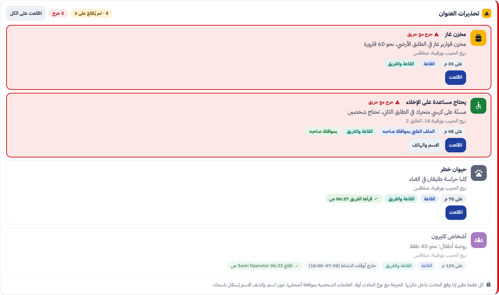
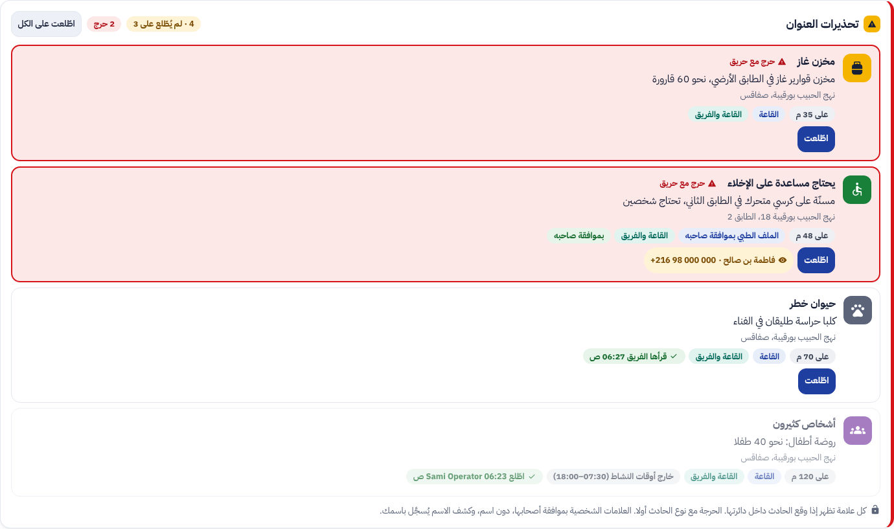
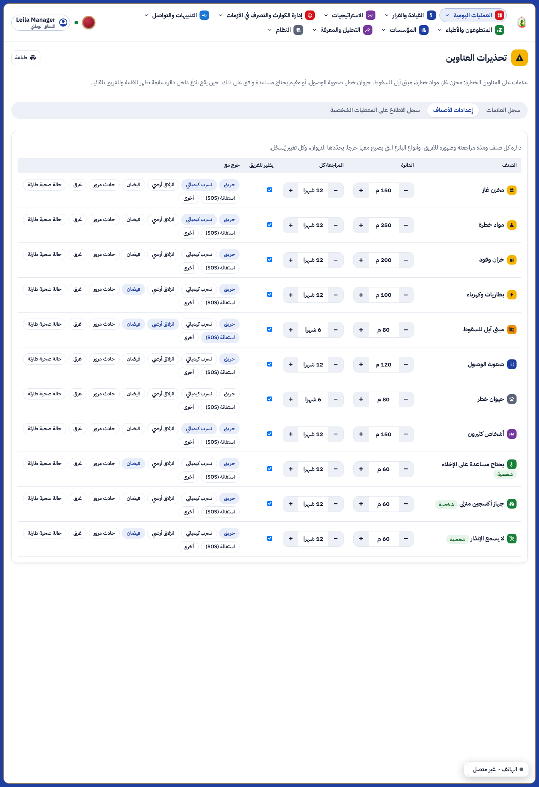
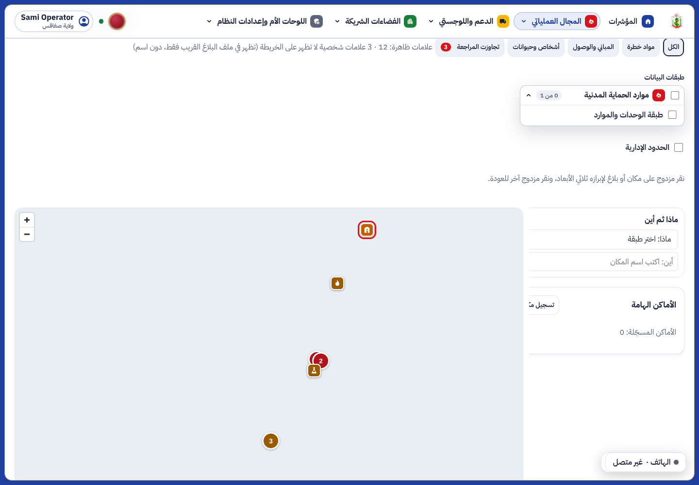
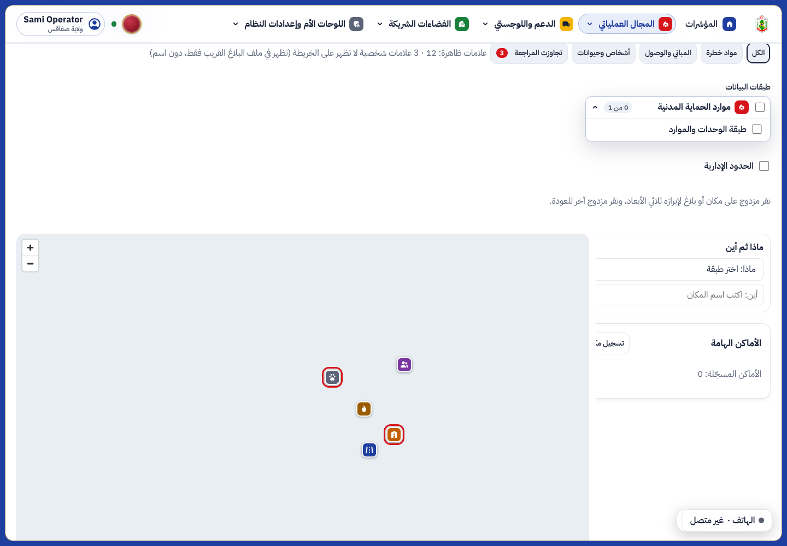
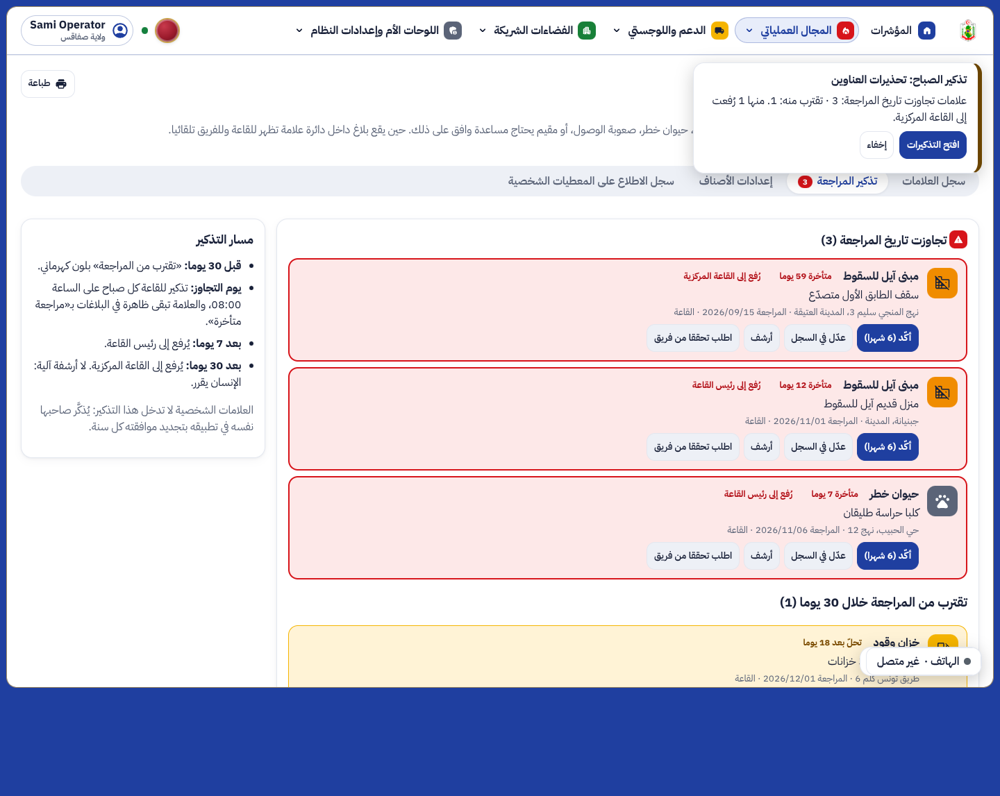
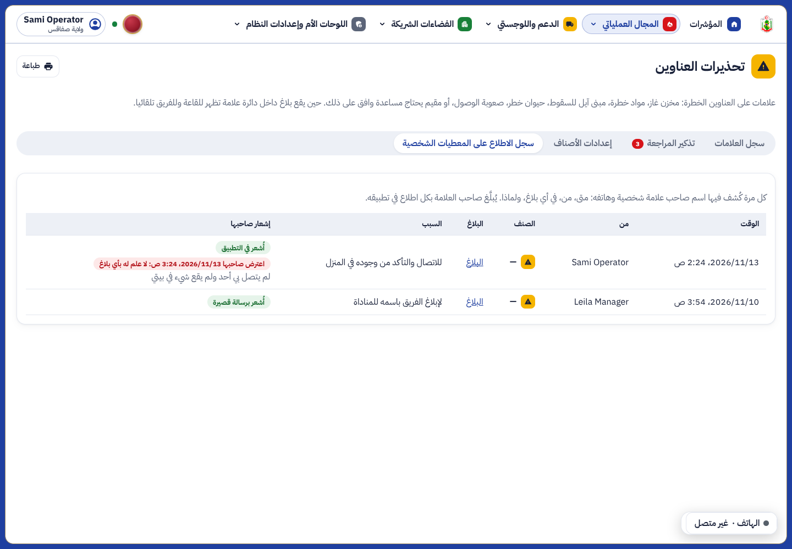

تقرير المرحلة OS8: تحذيرات العناوين الخطرة في القاعة وفي هاتف الفريق، وموافقة المواطن من ملفه الطبي




شاشات الهاتف (بطاقة المهمة وموافقة المواطن) كما في النموذج المعتمد في prototypes/address-warnings/، ومختبرة في field_flow_test.dart وaddress_warnings_test.dart.
| العمل | من | الزر |
|---|---|---|
| قراءة السجل والتحذيرات وسجل الاطلاع | أدوار القراءة في العمليات | address_warnings |
| إضافة، مصادقة، رفض، أرشفة، تأكيد، استيراد | عون القاعة، رئيس العمليات (ولايته؛ والمركزية كل الولايات) | address_warnings.edit |
| «اطّلعت» | عون القاعة، رئيس العمليات | address_warnings.ack |
| كشف اسم صاحب علامة شخصية | عون القاعة، رئيس العمليات، بسبب مسجّل | address_warnings.reveal |
| إعدادات الأصناف | رئيس العمليات على المستوى الوطني | address_warnings.settings |
| القراءة والاقتراح من الميدان | رئيس الفريق في مناوبة على الآلية المكلَّفة | field_missions.address_warnings |
tests/test_address_warnings.py (بالدور المالك ودور التشغيل دون تجاوز RLS). ruff وmypy نظيفان.e2e/phase-os8.spec.ts (3 اختبارات).flutter analyze نظيف، واختبار جديد لمسار الفريق وثلاثة لموافقة المواطن.الوثائق الخمس الكبرى تُحدَّث معا في نهاية المرحلة كما في docs/phase-end.md.




SIMبيانات اللقطات تجريبية. الاختبارات: 3 جديدة في الخادم (test_address_warnings.py، 10 ناجحة)، 2 في اللوحة (AddressWarningsFollowUps.test.tsx)، 3 في المتصفح (e2e/phase-os8-followups.spec.ts)، و2 في الهاتف مع مسار الإشعار؛ flutter analyze نظيف.